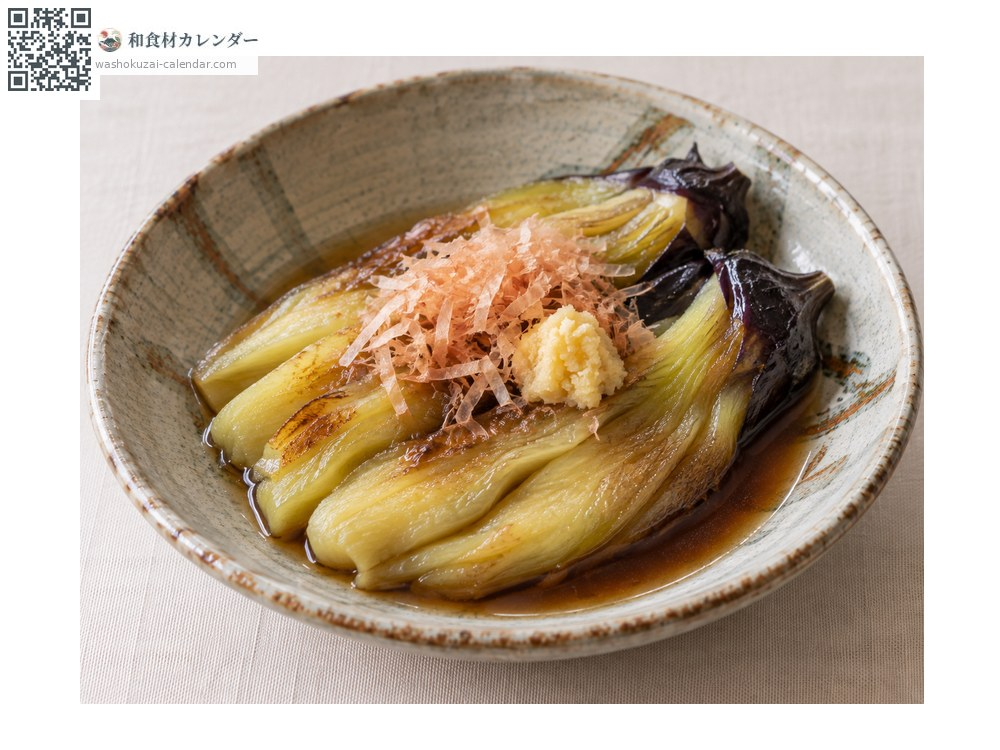
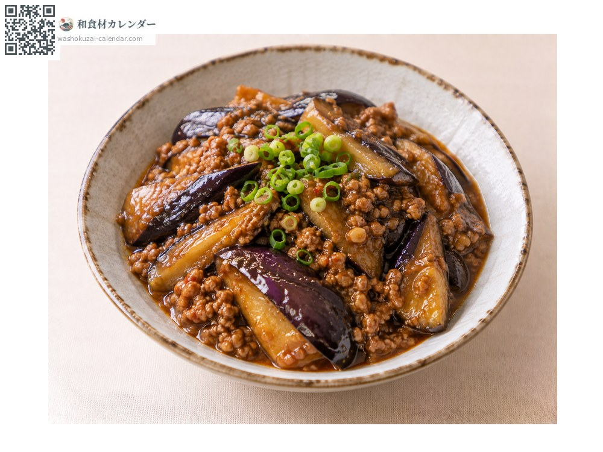
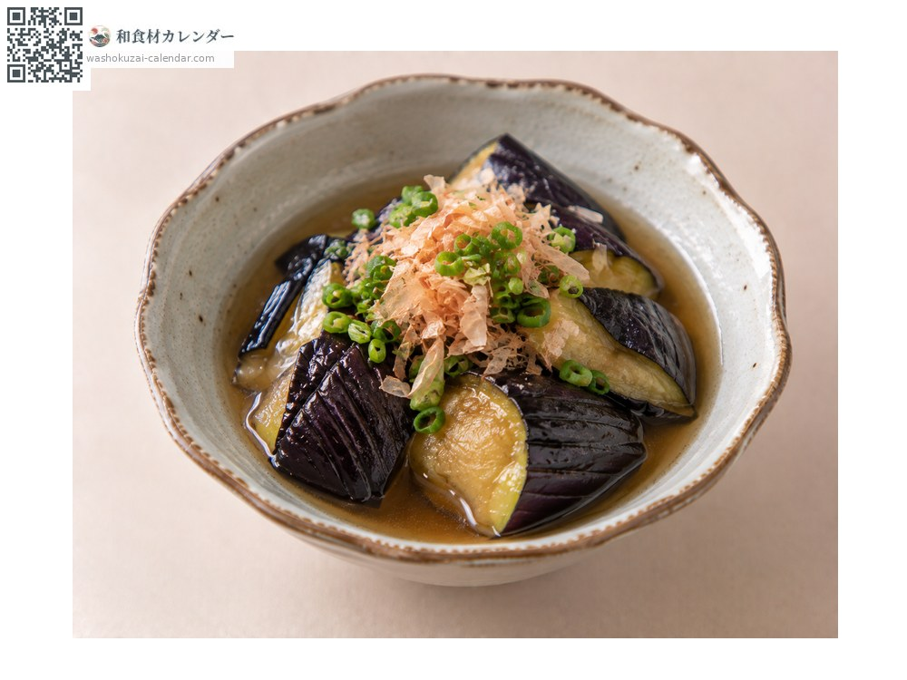
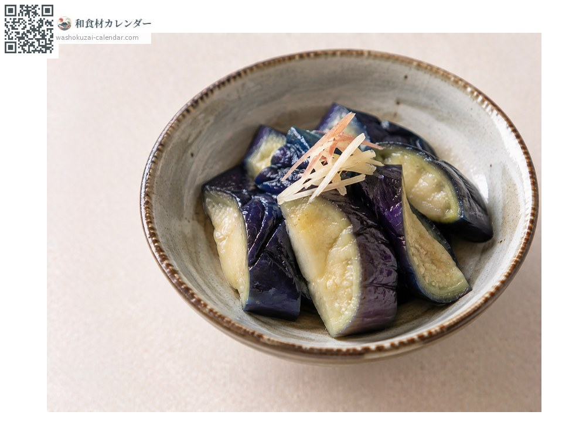

野菜
ナス
なす
別名・別表記茄子、なすび、nasu、nasubi
旬は7月・8月・9月

旬の時期
1月
2月
3月
4月
5月
6月
7月
8月
9月
10月
11月
12月
旬出回り
調理法

焼きなす
皮を焦がして剥き、生姜醤油で。

麻婆なす
油との相性が良い。

揚げ浸し
素揚げして出汁に浸す。

漬物
塩もみやぬか漬けに。
選び方
皮に張りと艶があり、色が濃いもの。がくのトゲが鋭いものは新鮮。
保存方法
低温に弱い。新聞紙に包んで野菜室へ。5度以下だと傷みやすい。
主な産地
豆知識
地方ごとに品種が多く、京都の賀茂なす、大阪の水なす、新潟の十全なすなど形も味も異なる。